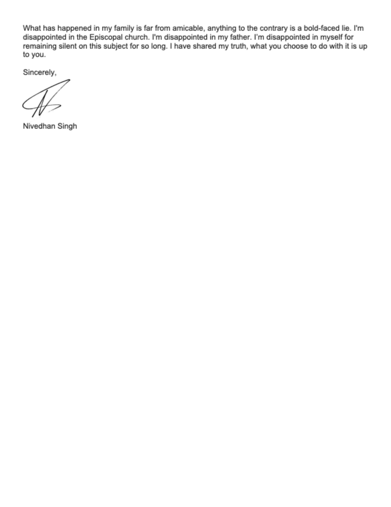
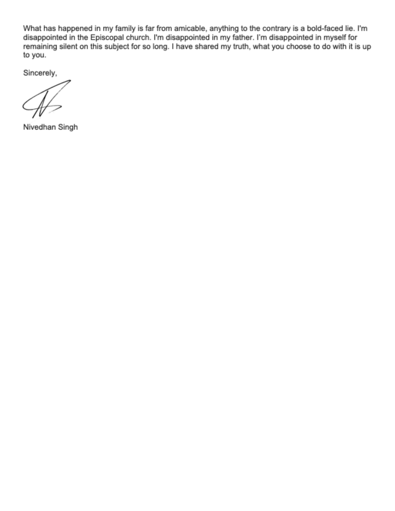

The slogan of the Episcopal Diocese of Rochester popularized by Bishop Prince Singh,
the ex-husband of Roja Suganthy-Singh is “Welcoming all as God’s beloved.” The account
that follows makes a mockery of that motto.
Dear listener,
After much pain and over two years of reflection, I write as an injured woman, mother,
and former Bishop Spouse of The Episcopal Diocese of Rochester in the hope that recent
errors will not be visited on clergy and Bishop families in the future. This letter is
meant to call the Episcopal Church and Bishop Singh into accountability. My ex-husband
has attempted to control the narrative with public statements, but the world should know
the truth. I ask that the Episcopal Church acknowledge the deep harm done to me and to
my sons by the assumption that a Bishop’s word should not be questioned, or even explored.
Why did the Episcopal Church choose silence for six months even after our sons sent letters
to the Presiding Bishop Michael Curry in December 2022 describing our experiences of physical,
emotional, and psychological abuse by Bishop Singh? Why did the Episcopal Church remain silent
after I met with Bishop Curry via zoom on Feb 22, 2023? How can church leaders choose to be silent
when an entire family is reaching out about a Bishop’s abuse? Does my social identity as an
Indian-American Dalit woman mean that I should be isolated and ignored?
On February 24th, 2021, the Standing Committee of the Diocese of Rochester, leaders in the
entire Diocese, the Presiding Bishop, the House of Bishops, clergy outside the Diocese, and
thousands of laypeople received a letter from Bishop Singh announcing that I had initiated the
end of our marriage. In so doing, the Bishop made unilateral use of his position and power to
intentionally preserve his image at the cost of my reputation – and the truth.
Bishop Singh sent that letter after I left our home on January 23rd, 2021; I left because I did
not feel safe. I was the target of Bishop Singh’s repressed anger, biting tolerance, and abuse
for many reasons, one of which he revealed after 28 years: that I was a Dalit. In the man-made
caste hierarchy in India, Bishop Singh is placed in the 4th caste called Shudra. My ancestral family
was shunned by Indian society as “Outcaste” (Untouchables) or Dalits. The intervention of missionaries
brought education and hope into my family. Bishop Singh and I worked hand in hand to deny the existence
of caste differences and erase those caste lines. You can imagine the deep betrayal I experienced when
Bishop Singh told me on April 17th 2020, “Because you are Dalit, I tolerated a lot in this marriage.”
He put these words in an email as well. My heart sank because this was a man with whom I joined hands in
creating awareness on the dangers of caste and someone who encouraged me in my self-identification as Dalit.
In that moment, his growing discomfort in my outspokenness on Dalit women’s issues and my emergence as
a prominent voice in the Anti-Caste movement in the USA became clear.
Since 2011, Bishop Singh has asked with increasing frequency for a divorce. He has threatened
that he is done with me and that I should leave the house. I have emails from him in 2020 very
clearly asking for a separation and for a divorce. It is a blatant lie that in his February 2021
letter, he points to me as the initiator of the divorce. The pattern of lies continues. One of many:
In Bishop Singh’s communication with the Dioceses of Michigan on June 19th 2023 he wrote, “after two
and half years post-divorce I moved into a new relationship.” That statement is untrue. We were divorced
in June 2022.
You may wonder why I did not contact the Standing Committee or the Presiding Bishop at the time the
letter went out to the Diocese of Rochester. Contrary to Bishop Singh’s assertions in his letter, I
care for him, and had always hoped that one day he would truly repent to my sons and me and take
responsibility for his words and actions and that our marriage could be saved, and our family preserved.
I felt that publicly contradicting Bishop Singh at that time would have put an end to that hope.
Even though I was strongly opposed to sending out the letter, Bishop Singh insisted that the letter
had to go out soon. We had only been separated for a few weeks at that point. I was scared, in a vulnerable
state just after leaving my home, and finally agreed under duress to the least horrifying of several drafts.
It was not until the letter went out, and I heard comments from others including a Bishop spouse, that I
actually felt the impact and saw the deliberate attempt to hide the truth. There were untrue words that I
requested my ex-husband to remove; instead they stayed. I was devastated by the tone of finality in the letter
and was saddened that the family therapy sessions with our sons, and all my contact with Bishop Singh except
that of a legal nature, ended with this letter.
It is very easy for people to ask: why didn’t you leave sooner? The simple answer is that I love him and
our children. I was trapped with financial dependence on him since I left a secure tenure-track professor
position in New Jersey and had to start from scratch as a part time lecturer. A pattern of Bishop Singh’s
intermittent proclamations of his love for me made it harder as well. He would verbally abuse me and then
in the very next minute he would be very kind and loving. I was mentally tossed.
The impact of Bishop Singh’s Diocesan-wide letter on February 24, 2021 is hard to overstate. Our ties
with the Episcopal Church were severed; priests and friends avoided me. Perhaps my Diocesan friends were
fearful since Bishop Singh told everyone not to contact me. Either way, I was cut adrift from my faith
community while my soon-to-be ex-husband retained his Bishop’s privileges. He continued to enjoy friendships,
dinners, drinking and kayaking trips with clergy in Rochester. Even after he left the Diocese, he has made
special visits to commune with priests there. Why did the Presiding Bishop make this special concession to
overlook Bishop Singh’s flouting of the rule that Bishops must sever relationships with their previous
Dioceses? To me, this is an indication of their close friendship.
Except for one couple, who care deeply for our sons, I did not receive a call or even a note from my
parish pastor or from any members of my parish to enquire after my well-being, much less to verify the
veracity of the statements in the Bishop’s letter. After twelve years of my service to this Diocese,
much of it heavy, hands-on work, continuous hospitality, and teaching at many other parishes where I
truly believed I had built friendships and community; I heard nothing from any of those church members.
One kind soul reached out to me after six months, explaining that the closing of the Bishop’s letter in
which he asked for “space” for each of us, kept her from doing it sooner. Since I wrote to the Diocese
of Rochester, several people from the Diocese have told me that they were following the instructions in
the letter from Bishop Singh and the chair of the standing committee Cameron Miller to not contact me and
to respect my privacy! This was an orchestrated strategic isolation of a woman of color in a male dominated
institution. The impact of that sentence about “space” came as a shock to me when it was published. I needed
support, not silence. I was devastated that Rev. Cameron Miller’s attachment to that letter spoke for me
without even talking with me and took the liberty to use the term “impending divorce” which totally
misrepresented me and my desires. No legal paperwork had been filed at the time of this mailing. No one from
the standing committee talked with me.
Another blow came when my sons and I were not even mentioned at the Bishop’s Farewell Party from the
Diocese of Rochester. This oversight was acutely felt by our sons. You will understand that a mother’s
pain for her slighted children is worse than she can possibly feel for herself. The Presiding Bishop
spoke at this event, lending his authority and stamp of approval to the event. This intentional act of
exclusion hurt because I loved this Diocese, and even more because I am a brown Dalit woman who has been
made invisible. I have become a nobody to the Church, except for a few kind laypeople who genuinely and
unconditionally reached out.
Most devastatingly, I did not hear a word from the Presiding Bishop after Bishop Singh’s letter, even
though my sons and I had enjoyed a close pastoral and friendly relationship with him. On December 17,
2022, I felt strong enough to email him to ask why. He replied that he was given to understand that
I did not wish to hear from him! That is, he believed Bishop Singh so completely, so utterly, that our
years of pastoral care and friendship were immediately erased. He did speak with me once over zoom on
February 22nd, 2023, reiterating the fact that an individual not identified by Curry told him that I did
not want to be contacted by him. Further, Bishop Curry stated that he asked that individual to convey to
me that I could call him anytime. I informed Bishop Curry that I never stated that I did not want to be
in contact with him. I was never informed that I could call PB Curry any time. Another lie, omission, and
strategic isolation. In that call I clearly stated that I left the house because I did not feel safe. I
mentioned the excessive use of alcohol by Bishop Singh. Further,I offered my help to provide resources
for other Bishop and clergy families in similar abusive situations. The Presiding Bishop stated that Bishop
Todd Ousley will be in touch with me, but six months passed and still no word from the PB or from Ousley
or his office.
The Presiding Bishop and other church leaders decided to ignore 31 years of physical, verbal, and
emotional abuse and lies that my sons and I disclosed. Is this what Jeus would do? It is very sad
that a church community that is supposed to stand with the oppressed, instead joins hands with power,
patriarchy and privilege to silence the truth. This is irrefutably abuse impinged on a family on the
part of the Episcopal Church in its negligence, dismissive attitude and refusal to hear the truth about
domestic abuse and pushing the facts on abuse under the rug to protect a Bishop. This spiritual abuse
by the church has caused my children and me emotional and psychological trauma.
I loved the church so much that I wanted to marry a priest. Our marriage was quasi- arranged by a close
family friend who was Bishop Singh’s aunt. We were introduced in August, 1991 and were married two months
later. I was enamored by his charisma, kindness, the fact that he said he would not take a dowry, and
that he stated that did not care about caste. Whether he intentionally lied or deceived himself, after
28 years of marriage; I realized that he had lived our entire marriage viewing me as lesser because of
our caste differences.
The emotional abuse started quite early in our life together. Before we were married, he told me that
he was in love with a person while in Seminary and that her father did not approve of their marriage.
In his video message on Facebook on June 20th 2023 about his remarriage he says, “we dated in seminary”
but it was more than that. When we were married, Singh told me--full of male entitlement--that I needed
to be patient with him until he got over his former lover. Barely two months into our marriage he told
me that he was attracted to fair-skinned women! I lost all confidence and joy in that moment. Days after
our first son was born, he wrote to his friend, David Singh, saying that I did not have a pretty face
and he was struggling to love me. There was no point in our marriage at which he stated that he had moved
on from his former lover and that I was the only love in his life now. She was an invisible presence in
our marriage, and he tried to fill that invisibility with deep emotional attachments with other visible
women. Charming as he is, that was easy – women and girls with ready access to him swarmed, right from
the very early years of our marriage. If I brought it up, he would scream at me. He keeps stating now that
he was faithful to me; maybe he was physically but he was not emotionally. Even his act of stating the
lack of “infidelity” publicly and unpromoted makes it seem untrue. In fact, in 2014 he emailed me a picture
from a Bishop’s conference in Taiwan. The picture was a selfie with a woman who looked like his ex-lover.
He expected me to accept it as a joke! This incident pulled me down.
We moved to the USA as a family with our baby, Nivedhan, in 1993. I was in the USA in 1990 doing my
masters in Christian Education in Virginia. I continued my studies and Bishop Singh joined a master’s
in theology Program. Rocky years emerged with the pattern of loving and caring followed by physical
and verbal abuse. He would throw things, lift his hands in beating gestures, and even wave a knife
at me while with marriage counseling. His alcoholism grew worse year by year, so much so that I slowly
felt less desire for his company. As a family we would barely get 20 minutes of his non-alcohol self
each day. It was hours and hours of drinking, watching TV and sleeping/passing out on the couch. He
continued to blame me for his alcohol use throughout our marriage counseling sessions because I brought
it up for discussion. In a June 6, 2020 email to me, Bishop Singh said, “Your psychological fragility
was a huge part of why I have done this work of absorbing your anxieties by just biting my tongue. And
my subsequent drinking.”
In our home, as my sons have already stated, we were subject to several forms of abuse. I was relieved
when our older son Nivedhan secured admission into the American Boychoir Boarding school from 6th grade
till 8th grade because he was subject to verbal and physical abuse on a regular basis. Eklan was subject
to a lot of anger and derogatory words as well, especially in front of his friends. If I intervened at
any point, Bishop Singh yelled at me. Humiliating me with racist, derogatory words in Tamil such as,
“Mayiru” (pubic hair). I experienced financial abuse as well. I would periodically find out that thousands
of dollars were given to his family/relatives, and institutions here without consulting me.
Our son, Eklan, struggled with depression from the relentless emotional abuse. He was brave enough to
share this truth in his own open letter, which he shared with Presiding Bishop Curry on December 29, 2022.
Bishop Singh did not have any sympathy, but insisted that he snap out of it. When I expressed concern with
Bishop Singh’s lack of care and dismissiveness around his attention to other women, he would snigger and
mock me. He would reject me emotionally and physically at those times. This escalated behavior eventually
increased my anxiety level and during one of his trips to India in 2013, without even saying bye to me,
my therapist advised me to seek psychiatric care. Upon his return there was no sympathy. “I don’t want to
talk about this and ruin our reunion…Don’t expect that you will now be the center of my world” These words
pierced through me. He would often remind me that, “Being joyful is a choice!” This is emotionally
unintelligent, offensive, and stigmatizes the realities of mental health.
Eventually, the years of abuse and use of alcohol became too much to bear . On January 23, 2021--I left
our family home because I feared for my physical safety. Bishop Singh’s response shows that I was right
to be concerned. My sons and I have faced isolation, public slander, unethical disclosures of private
medical information, and personal heartbreak. The Church was my home since I was born and now I have lost
my home. My sons have lost their home. I have lost trust in the church, and its leaders.
To the priests and leaders in the Episcopal Church who stand for truth, please act on your belief.
You preach that God seeks out the vulnerable and rejects the people in power. I ask you to follow Christ’s
example and believe survivors of abuse when we share our stories. Aren’t we a part of “God’s beloved” as well?
Sincerely,
Roja Suganthy-Singh


 
